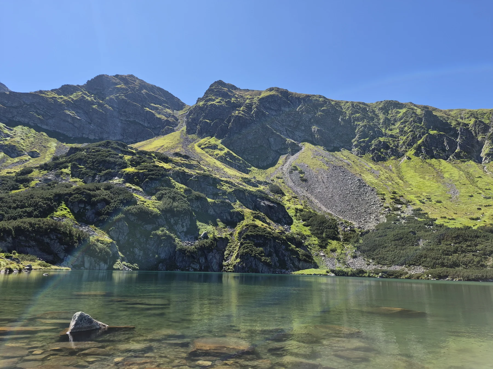
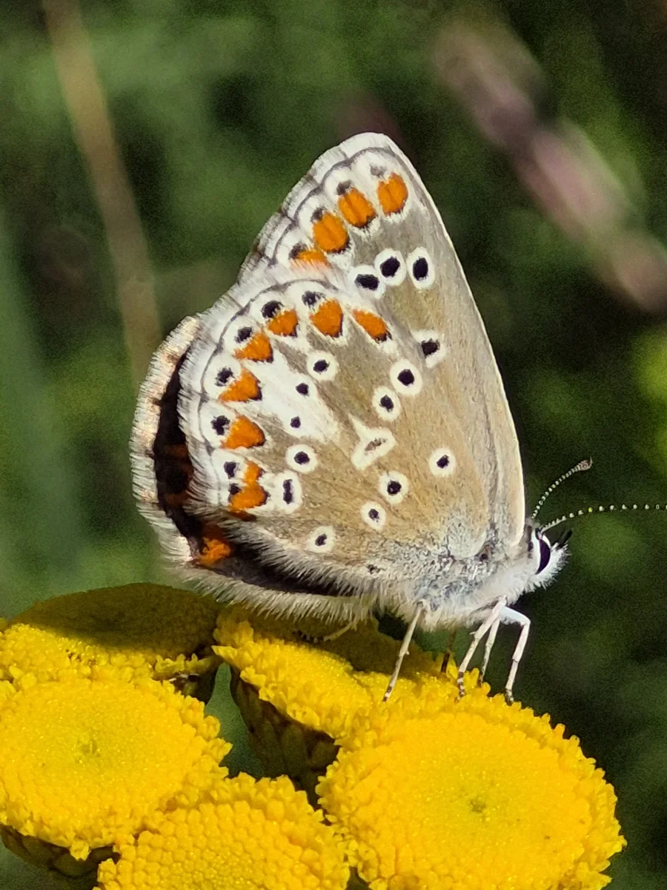

Woda pod lupą
Życie rzeki, organizmy wskaźnikowe, właściwości wody i sposoby poznawania ekosystemów wodnych.
OBSERWACJE / DOŚWIADCZENIADORADZTWO ŚRODOWISKOWE I EDUKACJA
Łączę badania terenowe, wiedzę naukową i edukację, by pomagać podejmować lepsze decyzje dla środowiska. Wspieram firmy, samorządy i instytucje edukacyjne.

01 / PERSPEKTYWA
02 / UWAŻNOŚĆWielki obraz.
Znaczące szczegóły.
01 / W CZYM MOGĘ POMÓC
Potrzebujesz diagnozy, planu działania lub wiedzy dla zespołu? Dobieram zakres pracy do miejsca, problemu i celu Twojej organizacji.
Badania · monitoring · ocena stanu
Rozpoznanie stanu cieku i jego otoczenia, identyfikacja presji oraz interpretacja danych o środowisku wodnym. Punktem wyjścia są obserwacje terenowe i metody dopasowane do celu badania.
Rozpoznanie walorów · siedliska · ochrona
Pomagam dostrzec wartość przyrodniczą terenów i przełożyć ją na sposób ich zagospodarowania, pielęgnacji i ochrony.
ESG · ślad węglowy · zielona transformacja
Wsparcie w rozpoznaniu wpływu organizacji na środowisko i wyborze działań, które odpowiadają na rzeczywiste potrzeby. Łączę perspektywę przyrodniczą z analizą danych.
Mapy · interpretacja · czytelne raporty
Porządkuję dane terenowe i przestrzenne, aby można było z nich korzystać przy planowaniu, ocenie zmian i komunikowaniu wyników.
Warsztaty · wykłady · nauka obywatelska
Projektuję doświadczenia, dzięki którym ludzie zaczynają zauważać przyrodę i rozumieć własny wpływ na środowisko. Od spaceru badawczego po program angażujący całą społeczność.
TWÓJ KONTEKST MA ZNACZENIE
Diagnoza wpływu firmy, bioróżnorodność na jej terenie, dane środowiskowe, szkolenia i wolontariat pracowniczy. Wspólnie ustalimy, od czego zacząć i jak ocenić efekty.
Porozmawiajmy o Twojej firmie ↗Rozpoznanie walorów przyrodniczych, diagnoza miejskich cieków, rekomendacje ochrony i edukacja mieszkańców. Dane terenowe pomagają ustalić priorytety i rozmawiać o przyszłości terenu.
Porozmawiajmy o Twojej gminie ↗Wsparcie merytoryczne projektów, nauka obywatelska, spacery i warsztaty. Dla organizacji społecznych, instytucji kultury, szkół i zespołów, które chcą działać bliżej przyrody.
Zaplanujmy program ↗02 / CZŁOWIEK ZA BIORIVUS

Ekolog, badacz ekosystemów wodnych
i popularyzator nauki.
W BioRivus łączę to, co od lat robię w nauce, w terenie i w pracy z ludźmi.
Zajmuję się ekologią i ochroną środowiska, ze szczególnym uwzględnieniem rzek, roślinności wodnej i bioróżnorodności. Interesuje mnie nie tylko to, co pokazują wyniki badań, ale też to, jak przełożyć je na zrozumiałe wnioski i sensowne działania.
Pracowałem naukowo na Uniwersytecie Przyrodniczym w Poznaniu i Uniwersytecie Łódzkim, gdzie byłem zatrudniony na stanowisku adiunkta. Doświadczenie akademickie stanowi fundament mojego podejścia do badań terenowych, analizy danych i oceny ekosystemów wodnych.
Współtworzyłem bioindykacyjne i hydromorfologiczne metody oceny rzek. Uczestniczyłem w opracowaniu i wdrożeniu Makrofitowej Metody Oceny Rzek.
Wieloletnią współpracę z krajowymi centrami nauki i instytucjami edukacyjnymi łączę z prowadzeniem warsztatów, szkoleń i działań popularyzujących naukę.
W programie Strażnicy Rzek WWF angażuję mieszkańców w poznawanie i ochronę lokalnej przyrody. Koordynuję działania nad poznańską Górczynką.
03 / EDUKACJA I POPULARYZACJA NAUKI
Najlepiej poznajemy świat, kiedy możemy zapytać, sprawdzić i samodzielnie odkryć. Tworzę zajęcia, spotkania i materiały, które łączą rzetelną naukę z doświadczeniem.
Od wielu lat współpracuję z krajowymi centrami nauki i instytucjami edukacyjnymi, łącząc edukację przyrodniczą, eksperymentowanie i popularyzację nauki. Tworzę programy, scenariusze i materiały, prowadzę warsztaty, szkolenia oraz spotkania dla dzieci, młodzieży i dorosłych. To doświadczenie pozwala mi dopasować język, metody i poziom zajęć do potrzeb odbiorców.
Przeczytaj rozmowę o mojej pracy edukacyjnej ↗FORMY WSPÓŁPRACY
Dla szkół, instytucji kultury, organizacji społecznych, mieszkańców i zespołów firmowych.
Przykładowe tematy — program dopasowuję do wieku, celu spotkania i miejsca.
Życie rzeki, organizmy wskaźnikowe, właściwości wody i sposoby poznawania ekosystemów wodnych.
OBSERWACJE / DOŚWIADCZENIAZmiana klimatu, ślad węglowy, mikroplastik i zależności między codziennymi decyzjami a środowiskiem.
WARSZTATY / WYKŁADYBioróżnorodność w mieście, uważna obserwacja i wspólne dokumentowanie przyrody z iNaturalist.
SPACERY / NAUKA OBYWATELSKAMasz własny temat, grupę lub wydarzenie?
Zbudujmy program wokół Twojego celu.
04 / DOŚWIADCZENIE W PRAKTYCE
Wybrane przedsięwzięcia z mojego dorobku badawczego, edukacyjnego i społecznego.
 PRZYRODA Z BLISKA / FOT. TOMASZ ZGOŁA
PRZYRODA Z BLISKA / FOT. TOMASZ ZGOŁAWspólne obserwacje mieszkańców, spacery BioBlitz i dokumentowanie gatunków w iNaturalist. Projekt łączy poznawanie miejskiej przyrody z budowaniem zaangażowania w jej ochronę.
OCHRONA PRZYRODY / ZAANGAŻOWANIE
Projekt nad Górczynką łączący rozpoznanie stanu ekologicznego, głos mieszkańców, działania porządkowe i rekomendacje dla przyszłości doliny.
BIZNES / DANE ŚRODOWISKOWE
W ramach projektu CREDIT4CE koordynowałem prace nad opracowaniem kalkulatora śladu węglowego dla przedsiębiorstw. Odpowiadałem za część merytoryczną: metodykę obliczeń, dobór i opracowanie wskaźników oraz zakres i logikę funkcjonalności narzędzia. Łączyłem wiedzę środowiskową z praktycznymi potrzebami użytkowników.
05 / JAK PRACUJĘ
Ustalamy problem, lokalizację, odbiorców i oczekiwany rezultat. Na tej podstawie przygotowuję zakres i wycenę.
Dobieram metody, zbieram informacje i analizuję kontekst. Tam, gdzie to potrzebne, pracę zaczynam od wizji terenowej.
Otrzymujesz czytelne opracowanie, mapy, zalecenia lub program działania — zgodnie z ustalonym zakresem.
Wyjaśniam wyniki, wskazuję ograniczenia i pomagam ustalić, jak wykorzystać wiedzę w praktyce.
06 / UWAŻNOŚĆ NA CO DZIEŃ
Przyroda nie kończy się na obszarach chronionych. Bywa w zasięgu krótkiego spaceru, wśród miejskiej zieleni i nad niewielkim ciekiem.
Fotografuję, obserwuję i dokumentuję. Te drobne odkrycia są początkiem większych pytań.
Mój przyrodniczy notatnik ↗AUTORSKIE FOTOGRAFIE / TOMASZ ZGOŁA
PUBLIKACJE I DOROBEK NAUKOWY
Jestem współautorem publikacji naukowych poświęconych bioindykacji, hydromorfologii i ocenie stanu ekologicznego rzek. W moich pracach ważne miejsce zajmują roślinność wodna, zróżnicowanie siedlisk oraz wykorzystanie tych elementów w diagnozie ekosystemów rzecznych.
Dorobek publikacyjny łączę z praktycznym doświadczeniem w rozwijaniu metod badawczych i interpretacji danych środowiskowych.
07 / ZACZNIJMY OD ROZMOWY
Opisz miejsce, wyzwanie lub pomysł. Wspólnie ustalimy, jakiej wiedzy i jakich działań potrzebujesz.
biorivus@gmail.com ↗Poznań · zakres i miejsce realizacji ustalamy indywidualnie.